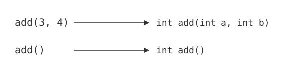
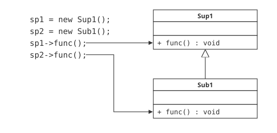

ポリモーフィズム
オーバーライドとオーバーロード
第6日目までで、C++言語に関する知識はかなり豊富になってきました。極端な話、そこまでの話だけで十分に実用的なプログラムを組むことも不可能ではありません。しかし、C++という言語を、あるいはオブジェクト指向という考え方を十二分に活用するには、まだまだ不十分と言わざるを得ません。
ここで紹介する、ポリモーフィズムは、C++に限らずそのようなオブジェクト指向言語における、最も大事な概念の一つです。この概念には、オーバーロードと、オーバーライドと呼ばれるものがあります。ここでは、それらの概念について説明していきます。
オーバーロード
オーバーロードのサンプル
では、実際のプログラムでオーバーロードの例を見てみましょう。
#ifndef CALC_H
#define CALC_H
class Calc{
private:
int m_a, m_b;
public:
// デフォルトコンストラクタ
Calc();
// コンストラクタ（引数つき）
Calc(int a, int b);
// 足し算処理その１
int add();
// 足し算処理その２
int add(int a,int b);
// 値の設定
void setValue(int a, int b);
// 値の取得(m_a)
int getA();
// 値の取得(m_b)
int getB();
};
#endif // CALC_H
#include "calc.h"
// デフォルトコンストラクタ
Calc::Calc() : m_a(0), m_b(0)
{
}
// コンストラクタ（引数つき）
Calc::Calc(int a, int b) : m_a(a), m_b(b)
{
}
// 足し算処理その１
int Calc::add()
{
return m_a + m_b;
}
// 足し算処理その２
int Calc::add(int a, int b)
{
return a + b;
}
// 値の設定
void Calc::setValue(int a, int b)
{
m_a = a; m_b = b;
}
// 値の取得(m_a)
int Calc::getA()
{
return m_a;
}
// 値の取得(m_b)
int Calc::getB()
{
return m_b;
}
#include <iostream>
#include "calc.h"
using namespace std;
int main(){
Calc *pC1, *pC2;
pC1 = new Calc(); // デフォルトコンストラクタ
pC2 = new Calc(1, 2); // コンストラクタ（引数あり）
cout << 3 << " + " << 4 << " = " << pC1->add(3, 4) << endl;
cout << pC2->getA() << " + " << pC2->getB() << " = " << pC2->add() << endl;
delete pC1;
delete pC2;
}
1 + 2 = 3
オーバーロードの概念
見るとわかるとおり、コンストラクタである、Calcおよび、add()関数が複数定義されていることがわかります。違うのは、引数の型だけです。
このように、C++言語では、コンストラクタを含め、すべてのメンバ関数で、引数の型や数が違っていれば、同じ名前を持つ複数のメソッドを定義することができます。これを、オーバーロードと言います。
オーバーロードのメンバ関数の使い分け
では、同一の名前のメソッドをどのようにして使い分けるのでしょうか。まずは、このプログラム内のadd()メソッドの例で見てみます。main.cppの10行目と11行目に着目してみてください。
10行目のadd()の呼び出しは、整数型の2つの引数があります。したがって、calc.hの15行目で定義されている方の関数が呼びだされます。11行目のadd()関数には、引数がありません。したがって、calc.hの13行目の関数が呼び出されるわけです。このように、オーバーロードされたメンバ関数は、引数の与えられ方などによって、区別されています(図7-1.)。

図7-1：オーバーロード
なお、オーバーロードできるメンバ関数の数には制限がありません。このサンプルでは2つしか定義していませんが、引数の型や数さえ異なれば、何個でも同じ名前のメンバ関数を定義することは可能です。
コンストラクタのオーバーロード
このような考え方は、コンストラクタに関してもまったく同じです。main.cppの8行目のnewで呼び出されるコンストラクタには、引数がありませんから、引数なしのコンストラクタが、9行目の場合は、整数の引数が2つあるので、引数のあるほうのコンストラクタが呼び出されます。
コンストラクタの場合、特に引数が付いていないコンストラクタのことを、デフォルトコンストラクタと呼びます。
クラスを定義したとき、コンストラクタのオーバーロードがなければ、デフォルトコンストラクタを省略することが可能です。ただし、引数のあるコンストラクタを一つでも作った場合は注意が必要です。ためしに、以下のプログラム（list7-2）をビルドしてみてください。
#ifndef SAMPLE_H
#define SAMPLE_H
class Sample{
public:
// 引数のあるコンストラクタ
Sample(int a);
};
#endif // SAMPLE_H
#include "Sample.h"
Sample::Sample(int a){}
#include "Sample.h"
int main(){
Sample* p1, *p2;
p1 = new Sample(1); // 引数のあるコンストラクタ
p2 = new Sample(); // デフォルトコンストラクタの呼び出し（エラー）
return 0;
}
ビルドしてみると、main.cppの6行目がエラーになることがわかります。このように、引数つきのコンストラクタを定義した場合、デフォルトコンストラクタは省略できないので注意が必要です。
オーバーライド
オーバーライドのサンプル
続いて、ポリモーフィズムのもう一つの例である、オーバーライドのサンプルを見てみましょう。まずは、以下のプログラム(list7-3)を実行してみてください。
#ifndef SUP1_H
#define SUP1_H
class Sup1{
public:
void func();
};
#endif // SUP1_H
#ifndef SUB1_H
#define SUB1_H
#include "Sup1.h"
class Sub1 : public Sup1{
public:
// オーバーライドされた関数
void func();
};
#endif // SUB1_H
#include "Sup1.h"
#include <iostream>
using namespace std;
void Sup1::func(){
cout << "Sup1" << endl;
}
#include "Sub1.h"
#include <iostream>
using namespace std;
void Sub1::func(){
cout << "Sub1" << endl;
}
#include "Sup1.h"
#include "Sub1.h"
int main(){
Sup1 *sp1;
Sub1 *sp2;
sp1 = new Sup1();
sp2 = new Sub1();
sp1->func();
sp2->func();
delete sp1;
delete sp2;
return 0;
}
Sub1
オーバーライドの概念
プログラムを見てわかるとおり、親子関係にあるクラス、Sup1と、Sub1に、func1()関数が定義されています。その上この二つは、戻り値の型、および引数はまったく同じです。このように、親クラス、子クラスに同じ名前、同じ戻り値の型、同じ引数をとるメンバ関数が存在する場合、子クラスのメソッドは、親クラスのメソッドをオーバーライドすると言います。
実行結果からわかるとおり、Sup1の場合は、Sup1、Sub1の場合は、Sub1と表示されます。オーバーライドされたメソッドは、親クラスが同じメソッドを持っていても、原則的に子クラスに定義されたものを実行します。(図7-2.)

図7-2：オーバーライド
再びポリモーフィズム
以上のような、オーバーライド、オーバーロードのことを、総称して、ポリモーフィズム(Polymorphism)と言います。日本語では、「多態性（たたいせい）」「多様性（たようせい）」などと訳されます。
ポリモーフィズムを利用する利点は、メンバ関数の名前が統一されることにより、名前を覚える必要がなくなることや、記述ミスを減らせることなどが挙げられます。特に、オブジェクト指向では、原則的に同じ機能には同じ名前をつけることが好ましいので、このように、同じような処理でも少しずつふるまいの違うメンバ関数に同じ名前をつけることにより、処理に統一感を持たせることが可能になるのです。